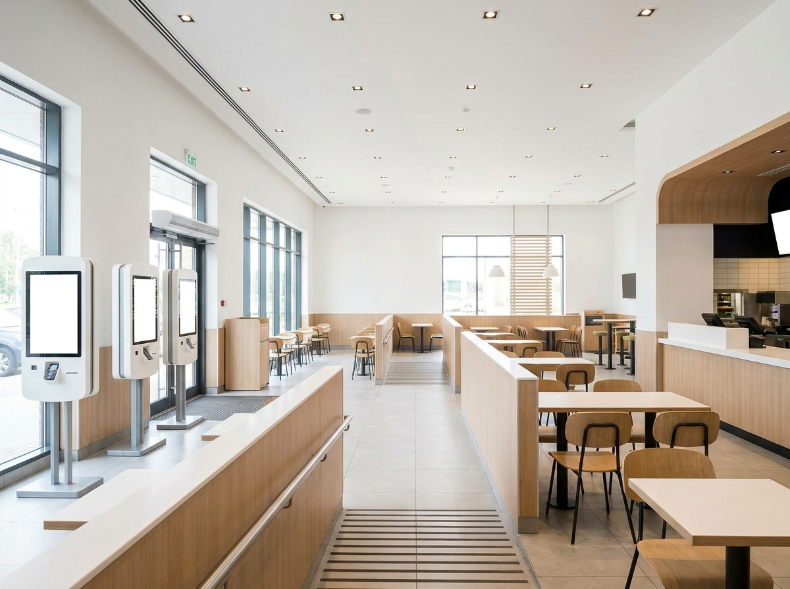
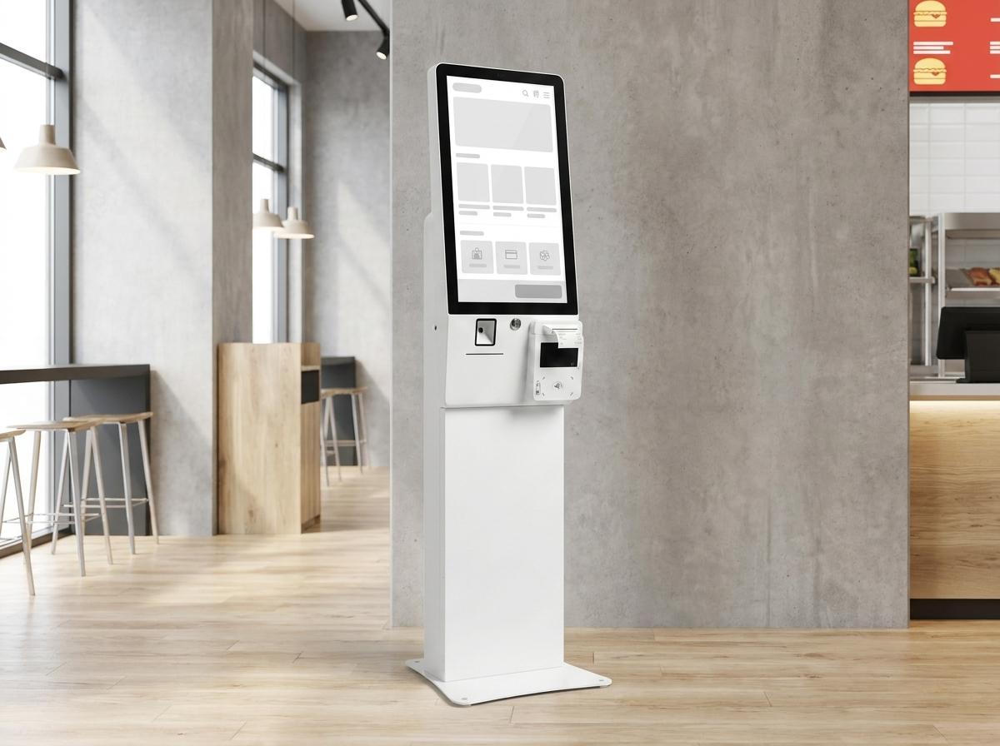
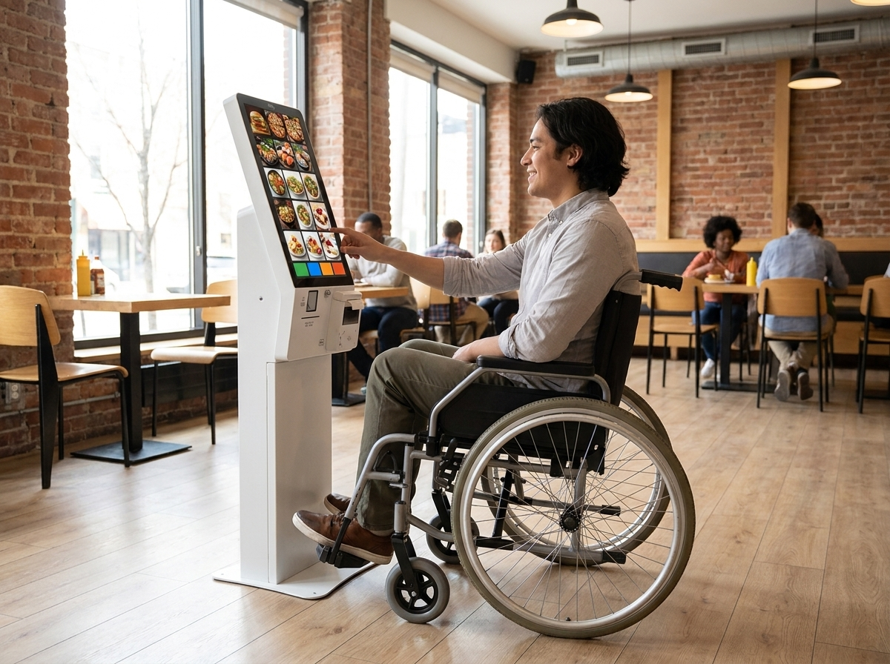

배리어프리 키오스크, 일반 키오스크와 무엇이 다를까요
결론부터 말씀드리면, 배리어프리 키오스크는 휠체어 사용자·저시력·고령 손님까지 누구나 스스로 주문할 수 있도록 화면 높이, 음성 안내, 화면 접근성을 설계 단계부터 배려한 무인주문기입니다. 일반 키오스크가 "빠른 주문"에 초점을 맞춘다면, 배리어프리 키오스크는 "모두가 쓸 수 있는 주문"을 목표로 합니다. 누리네트웍스는 14년간 수도권에서 3만여 매장의 결제·주문 환경을 직접 다뤄온 대리점으로, 매장 규모와 손님층에 맞는 키오스크 구성을 현장에서 함께 고민해 드립니다. 배려는 비용이 아니라 손님층을 넓히는 투자라는 점, 오늘 이 글에서 풀어드리겠습니다.

배리어프리 키오스크가 일반 키오스크와 다른 점
가장 큰 차이는 "누구를 기준으로 설계했는가" 입니다. 일반 키오스크는 서 있는 성인의 눈높이와 손 위치를 기준으로 만들어져, 휠체어 사용자가 화면 상단 버튼에 손이 닿지 않거나 시선이 화면에 가려지는 경우가 많습니다. 배리어프리 키오스크는 이 지점을 정면으로 해결합니다.
- 화면 높이·기울기: 휠체어 사용자가 앉은 자세에서도 화면 전체를 보고 조작할 수 있도록 낮은 조작부와 각도 조절을 고려합니다.
- 음성 안내·이어폰 단자: 저시력·시각장애 손님을 위해 화면 내용을 음성으로 안내하고, 이어폰을 꽂아 주변에 노출 없이 주문할 수 있습니다.
- 점자·촉각 버튼: 물리 버튼이나 점자 표기로 화면 터치가 어려운 분도 조작 지점을 찾을 수 있습니다.
- 저시력 배려 UI: 큰 글씨 모드, 고대비 색상, 단순한 화면 구성으로 고령 손님도 헤매지 않습니다.
즉 배리어프리 키오스크는 화면 접근성(볼 수 있는가) + 물리 접근성(닿을 수 있는가) + 인지 접근성(이해할 수 있는가) 세 가지를 함께 챙긴다는 점이 핵심입니다. 실제 매장에서는 주문 대기 줄이 길어질 때 "글씨가 안 보여서" 혹은 "버튼에 손이 안 닿아서" 조용히 돌아서는 손님이 생기는데, 이 구성은 그 이탈을 줄이는 방향으로 작동합니다.
일반 vs 배리어프리, 한눈에 정리한 표
아래 표로 두 방식의 차이를 개념 위주로 비교해 드립니다.
| 구분 | 일반 키오스크 | 배리어프리 키오스크 | 참고 |
|---|---|---|---|
| 설계 기준 | 서 있는 성인 | 휠체어·저시력·고령 포함 | 손님층 범위가 넓음 |
| 화면 접근 | 고정 높이 | 낮은 조작부·각도 배려 | 앉아서도 조작 |
| 시각 배려 | 기본 화면 | 큰 글씨·고대비·음성 | 저시력 대응 |
| 청각/촉각 | 제한적 | 이어폰 단자·점자 버튼 | 개별 조작 가능 |
| 도입 적합 | 회전 빠른 소형 | 공공성·다양한 손님층 | 매장 성격 고려 |
위 표는 이해를 돕기 위한 개념 정리이며, 정확한 규격·기준·의무 적용 여부는 반드시 한국장애인개발원, 관련 고시, 관할 지자체 안내 등 공식기관을 통해 확인하시기 바랍니다.

어떤 매장이 배리어프리 키오스크를 고려하면 좋을까
모든 매장이 당장 바꿔야 하는 것은 아닙니다. 다만 손님층이 다양하고 체류가 있는 매장일수록 효과가 큽니다. 예를 들어 병원·약국 인근 매장, 관공서 주변 식당, 복지관·문화시설과 가까운 카페, 고령 인구 비중이 높은 주거지 상권이라면 배리어프리 키오스크가 실제 매출로 이어질 가능성이 높습니다.
수도권만 봐도 송도·동탄·판교처럼 신도시 대형 상권부터, 오래된 주택가 골목상권까지 손님 구성이 제각각입니다. "우리 손님 중에 휠체어를 타시거나, 화면 글씨가 안 보여 주문을 포기하고 돌아선 분이 있었는가" 를 떠올려 보시면 판단이 쉽습니다. 한 분이 편하게 주문하면 그 동행 가족까지 단골이 됩니다. 배려가 곧 손님층 확대라는 말은 여기서 나옵니다.
또한 배리어프리 키오스크 관련 의무화·법(장애인차별금지법의 단계적 적용 등)은 매장 규모·업종·시점에 따라 다르게 적용될 수 있으므로, 우리 매장이 대상인지 아닌지는 단정하지 마시고 한국장애인개발원·관련 고시·관할 지자체 안내를 먼저 확인하시길 권합니다. 지원사업이나 절차가 궁금하시면 소상공인시장진흥공단 안내도 함께 참고하시면 좋습니다.
누리네트웍스가 제안하는 배리어프리 키오스크
누리네트웍스는 수도권(서울·인천·경기)에서 직접 방문·설치·A/S를 진행하는 대리점입니다. 14년 업력, 3만여 매장 운영 경험, 200곳 이상의 레퍼런스, 연매출 70억 규모의 안정된 기반 위에서 배리어프리 키오스크를 정품으로 공급하고, 설치 이후 매장 운영까지 함께 챙깁니다.
무엇보다 키오스크 한 대로 끝나지 않습니다. 포스(POS)·테이블오더와 연동해 주문·결제·매출 관리를 하나로 묶어 드리기 때문에, 배리어프리 주문 데이터도 매장 전체 운영에 그대로 이어집니다. 여러 유통 단계를 거치지 않는 거품 뺀 직접 공급가로 안내드리며, 정확한 견적은 매장 상황을 본 뒤 상담 시 안내해 드립니다. 참고로 토스단말기·네이버단말기는 월 0원·약정 없음으로도 시작하실 수 있어, 결제 단말과 함께 구성하실 때 부담을 낮출 수 있습니다.

자주 묻는 질문(FAQ)
Q. 배리어프리 키오스크는 우리 매장도 꼭 설치해야 하나요?
의무 적용 여부는 매장 규모·업종·적용 시점에 따라 다를 수 있어 단정해서 말씀드리기 어렵습니다. 한국장애인개발원·관련 고시·관할 지자체 안내를 통해 우리 매장이 대상인지 먼저 확인하시고, 상담을 통해 상황에 맞게 준비하시길 권합니다.
Q. 기존에 쓰던 포스가 있는데 키오스크만 추가할 수 있나요?
네, 가능합니다. 누리네트웍스는 기존 포스·테이블오더와 연동되도록 구성해 드립니다. 주문·결제·매출이 따로 놀지 않도록 하나의 흐름으로 묶는 것이 저희 강점입니다.
Q. 설치와 A/S는 어디까지 해주나요?
수도권은 저희가 직접 방문해 설치하고, 이후 문제가 생겼을 때도 직접 대응합니다. 송도·동탄·판교를 포함한 서울·인천·경기 전역이 직접 관리 대상입니다.
Q. 비용이 부담되는데 방법이 있을까요?
매장 상황에 맞춰 거품 뺀 직접 공급가로 안내드립니다. 결제 단말을 함께 구성하실 경우 토스단말기·네이버단말기는 월 0원·약정 없음으로 시작하실 수 있어, 초기 부담을 낮추는 방향으로 상담해 드립니다. 지자체·소상공인시장진흥공단의 지원사업 대상 여부는 해당 기관을 통해 확인하시면 도움이 됩니다.
배리어프리 키오스크, 상담부터 편하게 시작하세요
우리 매장에 배리어프리 키오스크가 맞는지, 기존 장비와 어떻게 연동할지, 어떤 구성이 부담 없는지 — 전화 한 통이면 현장 경험 14년의 답을 드립니다. 정품·수도권 직접 설치·포스 연동까지, 누리네트웍스가 처음부터 끝까지 함께합니다.
- 📞 전화상담 1544-7754
- 🌐 홈페이지 nwpos.co.kr


이미지1-매장: 휠체어 손님이 낮은 화면 앞에서 편하게 주문하는 매장 입구 장면
이미지2-제품: 큰 글씨 화면·이어폰 단자·점자 버튼이 보이는 배리어프리 키오스크 제품 클로즈업
이미지3-사용: 고령 손님이 음성 안내를 들으며 스스로 메뉴를 선택하는 사용 장면